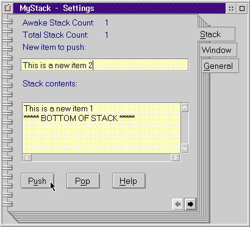

This section illustrates a complete setup/cleanup sample program.
The Workplace Shell Stack object is a sample Workplace Shell SOM application that demonstrates the use of the setup and cleanup methods. The complete program provides a new object class, Stack, whose instances implement standard programming push down stacks. WPAbstract is the parent class of the Stack class providing persistence of the stack entries, via the OS2.INI file. The Stack class also maintains the number of permanent object instances and currently awake objects (instantiated in memory).
A Settings notebook page has been added to each object allowing the user to:
The awake and total object counts are also displayed on each object's new notebook page. The following figure shows the Stack Settings notebook: